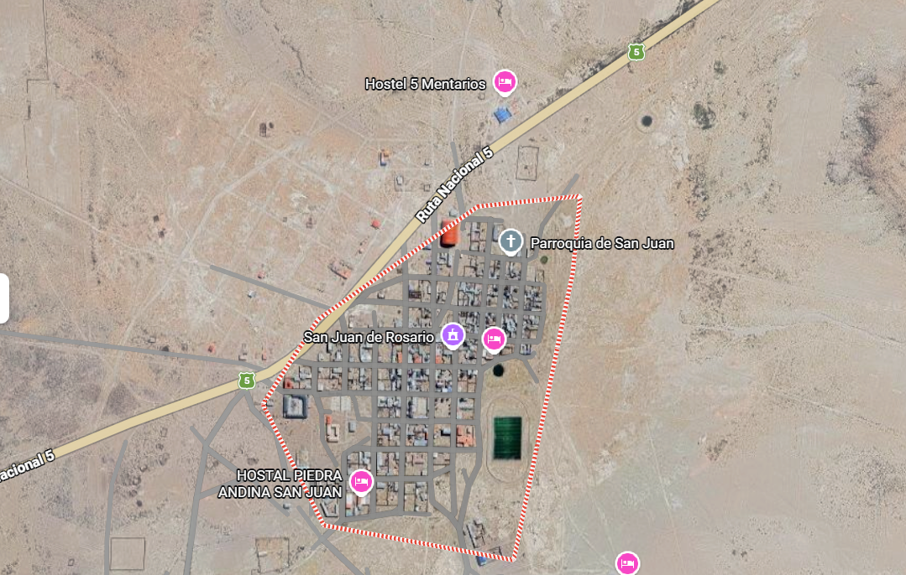

Nací en san juan y crecí en rio grande, una comunidad maravillosa ubicada en los Andes bolivianos a más de 3.600 metros sobre el nivel del mar.
Lo que más me fascina de mi comunidad es el museo de los chullpas, que nos permite recordar a los primeros avitantes angtes de que salga el sol